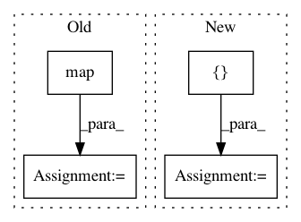

f7b4c6de2037ebedf6bc8ea5979e81666d54534f,research/object_detection/meta_architectures/center_net_meta_arch.py,,convert_strided_predictions_to_normalized_boxes,#,992
Before Change
true_heights_list = tf.unstack(true_heights, axis=0)
true_widths_list = tf.unstack(true_widths, axis=0)
box_lists = list(map(_normalize_boxlist,
zip(box_lists, true_heights_list, true_widths_list)))
boxes = tf.stack([box_list_instance.get() for
box_list_instance in box_lists], axis=0)
return boxes
After Change
// Note: We use tf ops instead of functions in box_list_ops to make this
// function compatible with dynamic batch size.
boxes = boxes * stride
true_image_shapes = tf.tile(true_image_shapes[:, tf.newaxis, :2], [1, 1, 2])
boxes = boxes / tf.cast(true_image_shapes, tf.float32)
boxes = tf.clip_by_value(boxes, 0.0, 1.0)
return boxes
In pattern: SUPERPATTERN
Frequency: 4
Non-data size: 4
Instances
Project Name: tensorflow/models
Commit Name: f7b4c6de2037ebedf6bc8ea5979e81666d54534f
Time: 2020-12-01
Author: rathodv@google.com
File Name: research/object_detection/meta_architectures/center_net_meta_arch.py
Class Name:
Method Name: convert_strided_predictions_to_normalized_boxes
Project Name: NVIDIA/sentiment-discovery
Commit Name: 83d80c5a19326a516b4ab54339c27f8cac349693
Time: 2018-06-14
Author: raulpuric@berkeley.edu
File Name: data_utils/lazy_loader.py
Class Name:
Method Name: make_lazy
Project Name: baldassarreFe/deep-koalarization
Commit Name: 6a00feac200b4f3d0fd5fb5641e38de4a06710d6
Time: 2017-05-05
Author: baldassarre.fe@gmail.com
File Name: dataset/batch.py
Class Name: ImagenetBatcher
Method Name: batch_all
Project Name: scikit-learn-contrib/categorical-encoding
Commit Name: b5034279b48ae96ffdd4714f96e0f62b0f4807fc
Time: 2018-10-26
Author: jcastaldo08@gmail.com
File Name: category_encoders/ordinal.py
Class Name: OrdinalEncoder
Method Name: ordinal_encoding